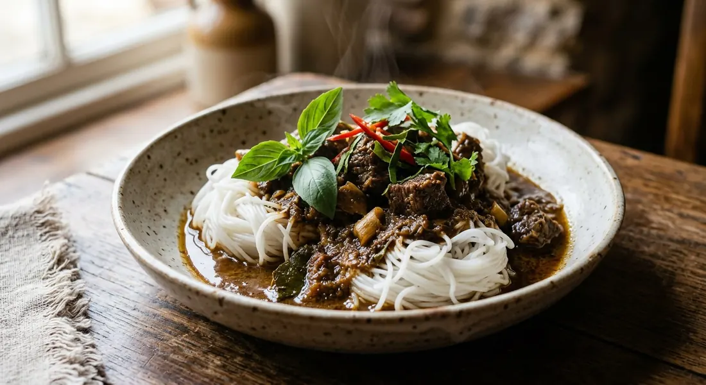

Fermented rice vermicelli under a coconut beef curry — curry paste and dry-roasted spices fried until the oil splits, beef simmered soft, pea eggplants and basil dropped in at the last breath.

ขนมจีนแกงเนื้อ reads as simply as it eats: ขนมจีน, the soft, faintly sour fermented rice noodles of central Thailand, and แกงเนื้อ, beef curry. The OpenRice cook who shared her recipe opens with the telling detail — she rarely finds the dish for sale, and when she wants it, she makes it herself. It is, like most khanom jeen curries, a home dish first and a stall dish second.
The curry underneath is แกงเนื้อ — beef curry in coconut milk, a central-Thai weekday pot. What lifts it onto khanom jeen is patience with the beef. Every Thai source here insists on the same two slow steps: the paste is fried in thick coconut milk until the oil splits (แตกมัน), and the beef is simmered in thin coconut milk until it softens — fifteen to twenty minutes at the short end, up to forty at the long end. "If you like it properly soft," the Pantip cook advises, "stew the beef with the thin coconut milk for 30–40 minutes first."
The third step is what makes this curry smell like an old kitchen rather than a jar: dry-roasted spices. Coriander seed, cumin and green cardamom are toasted in a dry pan and pounded into the red curry paste — a step Kapook calls "the heart of the rich, fragrant flavour." The finished bowl gets pea eggplants, Thai basil and a hard-boiled egg alongside, and the curry is ladled hot over room-temperature noodles so the sauce soaks into the coils.
| Thai | English | Amount |
|---|---|---|
| เนื้อวัว | Beef, bite-size pieces (a little marbling) | 400 g |
| พริกแกงเผ็ด | Red curry paste | 1 tbsp |
| ลูกผักชี | Coriander seeds, dry-roasted | 1 tbsp |
| ยี่หร่า | Cumin seeds, dry-roasted | 1 tsp |
| ลูกกระวาน | Green cardamom pods, dry-roasted | 3 |
| หัวกะทิ | Thick coconut milk | 1 cup |
| หางกะทิ | Thin coconut milk | 3 cups |
| มะเขือเปราะ | Pea eggplants | 1 cup |
| มะเขือพวง | Clustered pea aubergines | 1 cup |
| ใบโหระพา | Thai basil | 1 handful |
| พริกจินดาแดง | Red prik jinda chillies | 2–3 |
| น้ำปลา | Fish sauce | 2 tbsp |
| น้ำตาลปี๊บ | Palm sugar | 1 tbsp |
| ซอสหอยนางรม | Oyster sauce | 1 tbsp |
| เส้นขนมจีน | Khanom jeen noodles, for serving | 500 g |
The Cookpad pot (Beebirdja): 200 g beef, 50 g shop-bought red paste (Lobo), a cube of chicken blood, 10 pea eggplants, tomatoes, fish sauce, coconut sugar and seasoning powder — fried in rice-bran oil, finished with basil and chillies, five to ten minutes on the heat. The OpenRice pot: 4 ขีด beef, 1 cup pea eggplants, basil, kaffir lime leaves, thick and thin coconut milk, and green curry paste — beef fried in the split milk, seasoned with palm sugar, fish sauce and salt. The classic pot (Kapook's แกงเนื้อ): the same spice-roasting step, dried chillies, lemongrass and galangal in the paste, served with rice — the curry that taught this dish everything it knows.
The paste. Kapook and the Pantip original pound dry-roasted coriander, cumin and cardamom into red curry paste — the step both call the heart of the dish. OpenRice reaches for green curry paste and skips the roasting entirely. Cookpad's Beebirdja uses shop-bought red paste (Lobo) straight from the packet. Three kitchens, three pastes — all still call it แกงเนื้อ.
How long the beef cooks. Kapook and Pantip simmer the beef 15–20 minutes in thin coconut milk, extending to 30–40 for soft meat. OpenRice fries the beef in the split milk and boils it only until cooked. Cookpad goes shortest of all — five to ten minutes on the heat. The dish will forgive all of them, but only the slow ones melt.
Blood. Cookpad adds a cube of chicken blood (เลือดไก่) to the curry — an old khanom jeen habit the others leave out. If you like it, it sits between the beef and the tomato in the pot.
Kaffir lime. OpenRice finishes with kaffir lime leaves and basil together; Kapook and Pantip finish with basil and red chillies alone. The kaffir version smells sharper on top of the curry; the plain version lets the roasted spices do the talking.
The seasoning set. Pantip and Kapook season with fish sauce, palm sugar and oyster sauce. OpenRice uses palm sugar, fish sauce and plain salt. Cookpad reaches for coconut sugar, seasoning powder and MSG. Every one of them holds the sugar back — the beef and coconut do the sweetening.
This recipe is translated from the following Thai-language sources. Where they disagree, we've said so.
1. Kapook Cooking — "ขนมจีนแกงเนื้อ น้ำแกงเข้มข้น เนื้อนุ่มละลายในปาก หอมกรุ่นเครื่องเทศ" (the recipe used here; carries the Pantip cook's method) — cooking.kapook.com
2. Pantip — "แจกสูตร 'ขนมจีนแกงเนื้อ' น้ำแกงเข้มข้น เนื้อเปื่อยนุ่ม หวานมันกะทิ" topic 44015747 by เที่ยวสบายสบาย (the original post; the spice-roasting and the 30–40 minute simmer tip) — pantip.com
3. OpenRice — "ขนมจีนแกงเนื้อ" by Top (the green-paste and kaffir-lime version; the note that the dish is rarely sold) — th.openrice.com
4. Cookpad — "สูตร ขนมจีนแกงเผ็ดเนื้อ โดย Beebirdja" (the shop-paste and chicken-blood version) — cookpad.com
5. Kapook Cooking — "แกงเนื้อ แกงไทยรสเผ็ดร้อน เนื้อเปื่อยเหนียวนุ่มเคี้ยวอร่อย" (the classic beef curry the dish borrows its spice-roasting from) — cooking.kapook.com